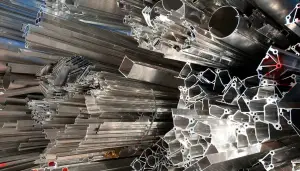

Україна, м. Київ, Голосіївський проспект, 89


ІНСПЕКЦІЇ
ІНСПЕКЦІЇ В ГІРНИЧОДОБУВНІЙ ПРОМИСЛОВОСТІ
Завдяки своєму великому досвіду компанія Alex Stewart International Corporation пропонує весь спектр інспекційних послуг в гірничодобувній промисловості, в тому числі аналітичні та технологічні консультаційні послуги. З моменту проектування і геологорозвідки до виробництва і відвантаження продукції в портах наші спеціалісти оперативно і кваліфіковано допоможуть Вам вирішити будь-які виробничі задачі і максимально оптимізують всі процеси виробництва. В наших аналітичних лабораторіях завжди можна провести кількістний і якісний аналіз руди і різноманітних гірських порід. Контроль ваги готової продукції, проведений нашими спеціалістами, підтверджується міжнародним сертифікатом, що дозволяє запобігти додаткових витрат. Сертифікат компанії Alex Stewart International Corporation, виданий на різні процеси видобутку сировини і виробництва готової продукції забезпечить Вам переваги перед конкурентами, як на Європейському, так і на інших міжнародних ринках.
АНАЛІЗ МЕТАЛІВ ПЛАТИНОВОЇ ГРУПИ
На даний час аналіз дорогоцінних металів і сплавів стає досить затребуваною послугою, оскільки тільки хімічна експертиза може з максимальною точністю визначити їх якісний і кількістний склад. Лабораторії нашої компанії володіють всіми необхідними реактивами і високотехнологічним обладнанням для якісного і точного аналізу. Аналіз дорогоцінних металів і сплавів можно провести декількома методами:
- хіміко-аналітичним;
- пробування на пробірному камені;
- купелювання за допомогою муфельної печі.
ДЛЯ ЧОГО ПРОВОДЯТЬ АНАЛІЗ ДОРОГОЦІННИХ МЕТАЛІВ
Хімічний аналіз дорогоцінних металів проводять для двох цілей:
- Визначити склад зразку і дізнатися метал чи сплав перед нами.
- Дізнатись, яка частина дорогоцінного металу в сплаві, що ми маємо.
В лабораторних умовах також визначають пробу і склад невідомих сплавів, використовуючи для цього необхідні реактиви та сучасні методи.
ДЕ ПРОВЕСТИ АНАЛІЗ ДОРОГОЦІННИХ МЕТАЛІВ
Якісний, оперативний, а головне точний аналіз дорогоцінних металів Ви можете провести в аккредитованих лабораторіях Alex Stewart International Corporation. Наші висококваліфіковані спеціалісти за допомогою сучасного лабораторного обладнання світових брендів швидко і якісно проведуть експертизу буль-якого дорогоцінного виробу або зразку сплава. При цьому Ви отримуєте об`єктивний висновок від міжнародної компанії
СІЛЬСЬКЕ ГОСПОДАРСТВО
Alex Stewart International Corporation співпрацює з рядом харчових лабораторій та може запропонувати повний спектр лаборатторного аналізу, контролю, послуг по сертифікації для міжнародної торгівлі продуктами споживання включаючи корм, насіння олійної культури, масла та жири, зерно, цукор-сирець та цукор-рафінад, їжу, корм для тварин, а також добрива.
Alex Stewart International Corporation має аккредитацію компаній GAFTA та GAS на проведення контролю і аналізу згідно до стандартів ISO 17025:2017 та ISO 17020:2012
ЕКОЛОГІЯ
В екологічному моніторингу ми забезпечуємо повний спектр екологічних аналітичних послуг по тестуванню, що спеціалізуються на аналізі грунту, осадку, води (сировина, выдходи, питна, дренаж, солончак), стічні води, пил, повітря (внутрішній стек, навколишній) газу, біоматеріалу, промислової гігієни та радіохімії. Аналітичні послуги по тестуванню лабораторії для цих матриць включає встановлений порядок, слід і органіку рівня ультрасліду (змінний та напівзмінний, гербіциди, пестициди, PCBs та побічні продукти дезинфекції), метали, неметалічні включення, мікробіологічні, біологічні, токсикологічні параметри, калібровка частки і радіонукліди. В додаток до звичайних послуг ми маємо експертні знання в багатьох інших спеціалізованих областях тестування.
МЕТАЛИ
Інспекційні послуги в сталеливарній промисловості включають безпечне повне спостереження завантаження і викиду горячої та холоднокатаної стальної катушки, закінчених і незакінчених стальних продуктів, а також металолома. Інспекційні послуги визначають кількість і якість стальних продуктів або вагу, шляхом дослідження, аналізу та виміру або візуального спостереження. В залежності від умов контракту послуги по спостереженню включають визначення ваги вантажу при відвантаженні або в порту, контроль циклу виробництва, контроль якості металу, облік і аналіз.
АНАЛІЗ ПРОДУКТІВ ХІМІЧНОЇ ПРОМИСЛОВОСТІ
Компанія Alex Stewart International Corporation має всі засоби для контролю якості готової продукції хімічної промисловості і охоплює практично весь ассортимент продукції:
- Неорганічна хімія (Виробництво аміаку, сірчанокислі та содові виробництва та інше);
- Органічна хімія (Акрилонітрин, Фенол, Окис етилену, Карбамід та інше);
- Кераміка;
- Нафтохімія (Бензол, Етилен, Стирол та інше);
- Агрохімия (Добрива, Пестициди, Інсектициди, Гербіциди та інше);
- Еластоміри ( Гума, Неопрен, Поліурітани та інше);
- Вибухові речовини (Нітрогліцерін, Нітрат амонію, Нітроцелюлоза та інше);
- Фамацевтична хімия;
- Парфюмерія і косметика
БУДІВНИЦТВО
На всіх етапах будівництва, від створення проекту до введення в експлуатацію готової будівлі команда компанії Alex Stewart International Corporation готова до вирішення задач любої складності.
Великий досвід роботи в даній сфері і співробітництво з ведучими проектно-технологічними інститутами, такими як ПАТ "Укрнііпроектстальконструкція ім. В.Н.Шимановського" і Інститут електрозварки ім. Е.О.Патона дають безспірну перевагу перед конкурентами. Проектування, геологорозвідка, технічний надзор, контроль якості зварних конструкцій, ввод в експлуатацію - це далеко не весь спектр послуг на які Ви можете розраховувати.
Якість, економія часу і засобів Вашої компанії - залог довгострокової співпраці компанії Alex Stewart International Corporation з багатьма замовниками України та інших країн.